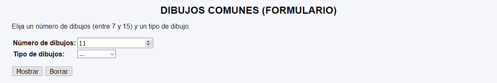
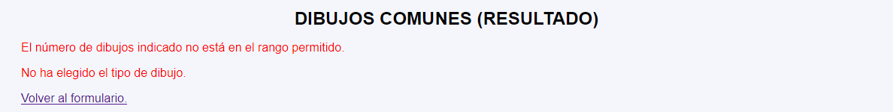
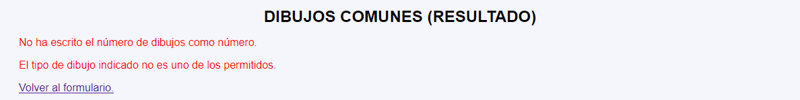
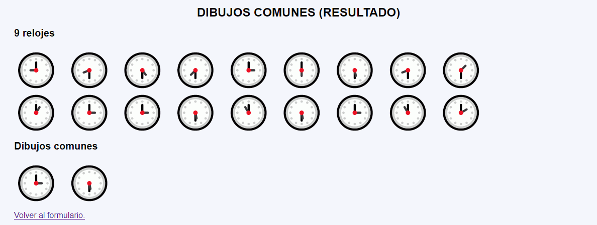
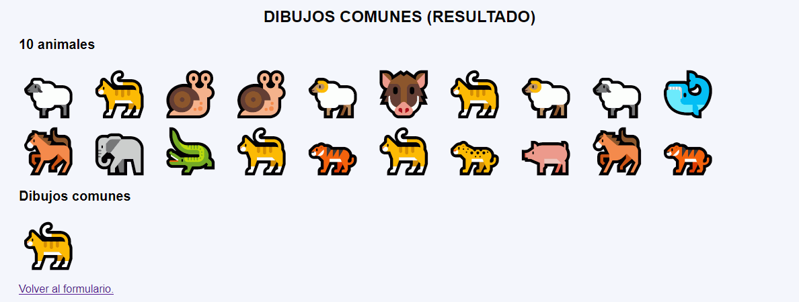
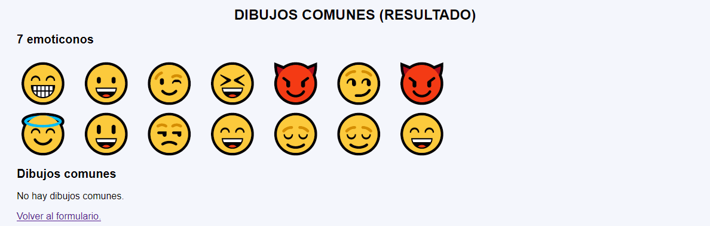

En este ejercicio se debe crear un programa que muestre dos tiras de dibujos de un tipo determinado por el usuario. Además, el programa indicará los dibujos que aparecen en las dos tiras.






<h2>7 emoticonos</h2>
<p style="font-size: 400%; margin: 0;">😓 😍 😐 😅 😐 😈 😃 </p>
<p style="font-size: 400%; margin: 0;">😏 😈 😐 😅 😌 😓 😅 </p>
<h2>Dibujos comunes</h2>
<p style="font-size: 400%; margin: 0;">😓 😐 😅 😈 </p>